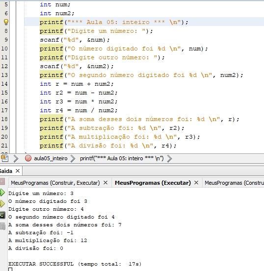
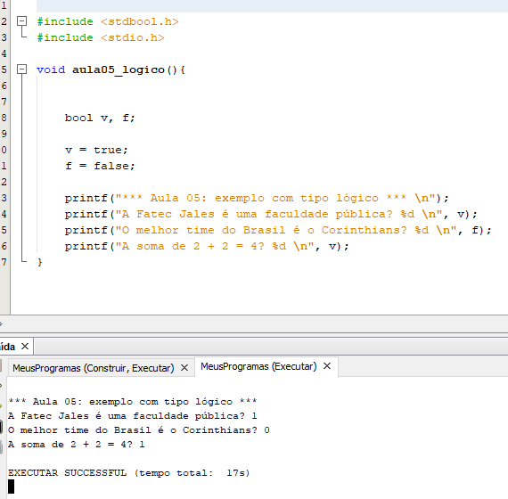
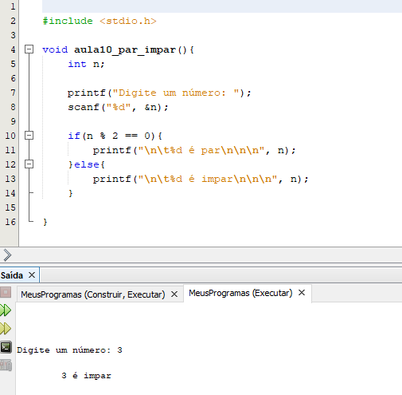
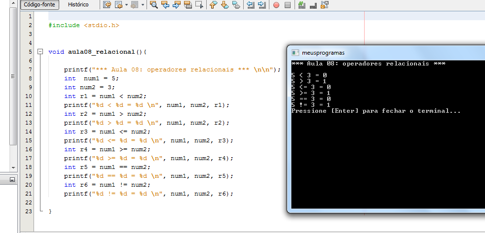
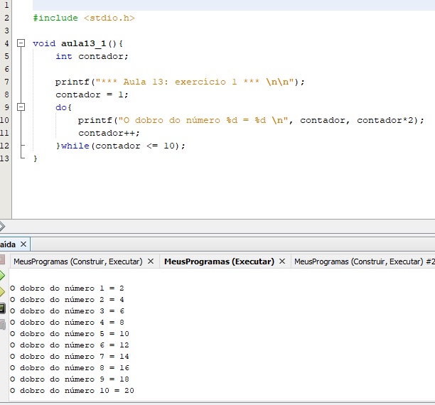
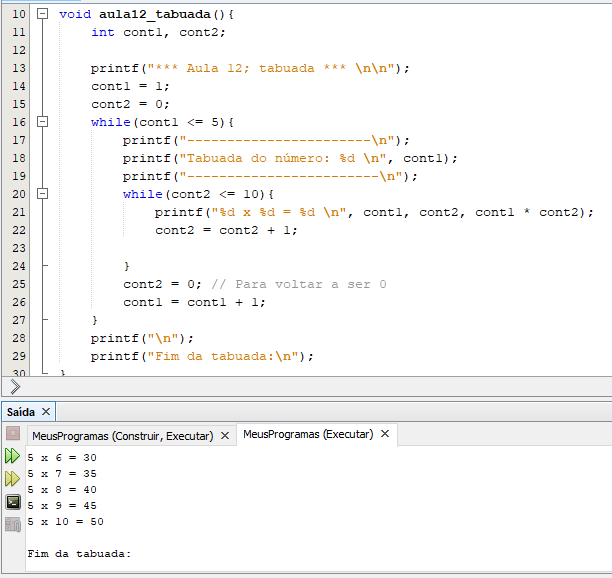
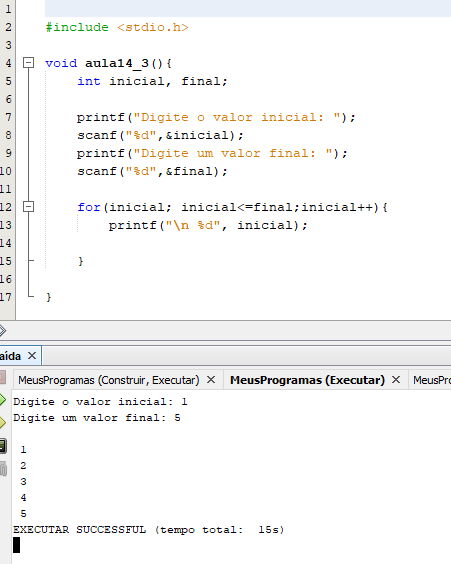

Algoritmos e Lógica de Programação
Exemplos de códigos da Linguagem C.
Imprimir mensagem na tela: Hello World.

Inteiro: Calculadora de Adição, Subtração, Multiplicação e Divisão.

Lógico: Verdadeiro ou Falso.

If Else: Se o resto da divisão for 0 então o número é par senão é ímpar.

Operadores Relacionais: Comaparando valores inteiros e respondendo com valores booleanos.

Do while: Mostrar o dobro dos números enquanto forem menores que 10.

While: Tabuada do 1 ao 5.

For: Somar mais um enquanto o número for menor ou igual ao que usuário escolheu.
